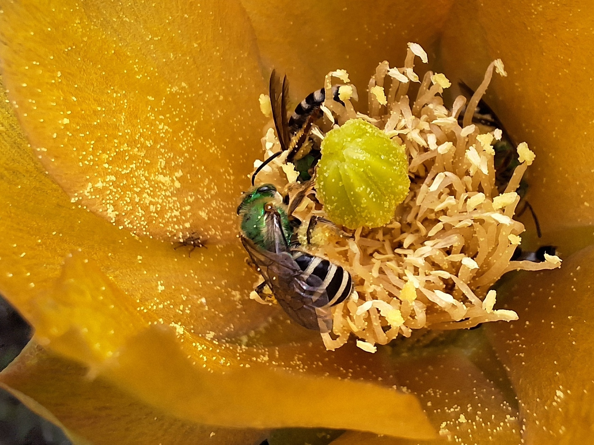

Community Ecology of Pollinators in an Andean City
Plant-Insect Ecological Network in Quito using Citizen Science
Daniel Velasco C.
2023-11-14
The following code describes the analytical workflow used to process insect–plant interaction data, construct bipartite ecological networks, perform multivariate analyses, calculate species-level network metrics (e.g., degree, species strength, centrality, and specificity), and evaluate patterns of interaction structure among taxa. The workflow includes data management, analysis and visualization.
Explanatory notes are provided throughout to improve transparency, reproducibility, and interpretation of each analytical step.
This code is intended as supplementary material accompanying the manuscript and documents the procedures used to generate figures, tables, and network analyses reported in the study.
Scientific Manuscript:
Velasco-Cedeño D, Miranda-Moyano N, Moya GF, Cisneros-Heredia DF. Ecological Patterns of Hymenopteran Pollinators in an Andean Urban Area Derived from Participatory Science. Submitted manuscript, under consideration in Journal of Urban Ecology.

1 First Steps
1.1 Load Packages
This section loads the R packages required for data import,
manipulation, visualization, and network analysis. The conflicted
package is used to explicitly prioritize dplyr::select()
and dplyr::filter() when functions with the same names are
available from multiple packages.
#load list of packages
invisible(lapply(c("readxl", "readr", "writexl", "GGally",
"patchwork", "reshape2", "factoextra",
#packages for networks
"bipartite", "igraph",
#dplyr for data mgmt and ggplot2 for figures and maps
"tidyverse"),
library, character.only = T))
#resolve conflict between packages
conflicted::conflict_prefer("select", "dplyr")
conflicted::conflict_prefer("filter", "dplyr")1.2 Import Data
The raw interaction dataset is imported from an Excel file. This file contains the compiled records of hymenopteran insects and their associated plant taxa used in the subsequent community and network analyses.
The interaction dataset used in this analysis was derived from participatory science records obtained through the iNaturalist platform. Records correspond to observations from the inter-Andean valley of Quito, Ecuador. Observations were manually reviewed, curated, and identified to the lowest feasible taxonomic level. Only records showing potential pollination interactions (i.e., insects in contact with or near reproductive floral structures) were retained for the analyses.

1.3 Data Management
This section filters the dataset to retain taxonomic information relevant to the insect–plant interaction analyses at the species level. Records identified only as “Indet” are removed to avoid including unresolved taxa.
#select taxa information
master <- master0 %>% select(15:24) %>% mutate_at(1:10, factor) %>%
rename(Origin = associatedTaxonEstablishmentMeans)
#remove indet values: records at species-level
m1 <- master %>%
filter(scientificName != "Indet", associatedTaxon != "Indet")
#create matrix playing with "table" function
m1 <- as.data.frame.matrix(table(m1$scientificName, m1$associatedTaxon))
#order of species
spp <- read_excel("Datos/Datos Analizados/Species Order.xlsx")
m1 <- m1[, names(spp)] #set plant species in taxonomic order
class(m1)#> [1] "data.frame"#> family tribe genus specificEpithet
#> APIDAE :1553 Apini :1212 Apis :1212 mellifera:1212
#> HALICTIDAE : 212 Xylocopini : 130 Indet : 144 sp. : 387
#> SCOLIIDAE : 68 Bombini : 115 Xylocopa : 130 Indet : 144
#> POMPILIDAE : 67 Halictini : 107 Bombus : 115 funebris : 48
#> VESPIDAE : 63 Campsomerini: 68 Pepsis : 66 ecuadoria: 45
#> MEGACHILIDAE: 53 Indet : 66 Lasioglossum: 61 aethiops : 42
#> (Other) : 97 (Other) : 415 (Other) : 385 (Other) : 235
#> scientificName associatedTaxonFamily associatedTaxonGenus
#> Apis mellifera :1212 ASTERACEAE :621 Trifolium: 193
#> Indet : 144 FABACEAE :376 Taraxacum: 163
#> Xylocopa cf. viridigastra: 130 RUTACEAE :234 Baccharis: 121
#> Pepsis cf. grossa : 66 LAMIACEAE :195 Indet : 118
#> Lasioglossum sp. : 61 BRASSICACEAE: 72 Ruta : 118
#> Bombus robustus group : 59 ROSACEAE : 70 Citrus : 116
#> (Other) : 441 (Other) :545 (Other) :1284
#> associatedTaxonSpecificEpithet associatedTaxon Origin
#> officinale: 163 Taraxacum officinale: 163 Alien :1406
#> repens : 160 Trifolium repens : 160 Endemic: 5
#> latifolia : 121 Baccharis latifolia : 121 Indet : 120
#> graveolens: 118 Indet : 118 Native : 582
#> Indet : 118 Ruta graveolens : 118
#> coerulea : 104 Dalea coerulea : 104
#> (Other) :1329 (Other) :13291.4 Lists of Species
This section generates species lists for both hymenopteran insects and plants recorded in the interaction dataset. The objective is to summarize the taxonomic composition of the community and provide an overview of the observed taxa.
#list of insects
list_insect <- master %>%
mutate(family = ifelse(scientificName == "Indet", "Indet",
as.character(family)),
tribe = ifelse(scientificName == "Indet", "Indet",
as.character(tribe))) %>%
group_by(family, tribe, scientificName) %>%
summarise(Freq = n(), .groups = "drop") %>%
mutate(Rel_Abund = (Freq / sum(Freq))) %>% arrange(-Freq)
#list of plants
list_plant <- master %>%
mutate(associatedTaxonFamily = ifelse(
associatedTaxon == "Indet", "Indet",
as.character(associatedTaxonFamily))) %>%
group_by(associatedTaxonFamily,
associatedTaxon, Origin) %>%
summarise(Freq = n(), .groups = "drop") %>%
mutate(Rel_Abund = (Freq / sum(Freq)) ) %>% arrange(-Freq)2 Network Visualization
2.1 General
This section visualizes the full species-level insect–plant interaction network using plotweb(). In this bipartite graph, insects and plants are represented as two separate sets of nodes, while the links between them represent observed interactions. The width of each link reflects interaction frequency, allowing highly connected taxa and dominant interactions to be visually identified.
### PLOTTING << Insect-Plant Networks >> ###
#png("fig1.png", width = 8, height = 5.5, units = "in", res = 300)
#pdf("fig1.pdf", width = 8, height = 5.5)
#par(mar = c(0, 0, 0, 0), oma = c(0, 0, 0, 0)) # márgenes pequeños
plotweb(m1, method = "cca",
col.interaction = "grey20", # color de la interacción
col.high = "#2E8B57", # color de especies arriba
col.low = "#EEC900", # color de especies abajo
bor.col.interaction = NA, # bordes
bor.col.high = NA,
bor.col.low = NA,
y.width.high = 0.1, # ancho de bloques
y.width.low = 0.1,
low.y = 0.675, # posición de boxes en el y-axis
high.y = 1.6,
text.rot = 90, # rotación de texto
labsize = 0.7, # tamaño de label
#ybig = 1.3, # dis entre upper and lower boxes
arrow = "no", # forma geométrica de la conexión
high.lablength = 0) # num de caracteres en etiquetas
2.2 Colored by Origin
These plots use the same species-level interaction matrix but modifies the colors to highlight interactions involving Apis mellifera or native insect, and alien or native plant species.
#color Apis mellifera
plotweb(m1, method = "cca", col.interaction = c(rep("grey80", 1020),
rep("#8B3626", 204), rep("grey80", 8976)), col.high = "grey30",
col.low = c(rep("grey80", 5), rep("#8B3626", 1),
rep("grey80", 44)), bor.col.interaction = NA, bor.col.high = NA,
bor.col.low = c(rep(NA, 5), rep("black", 1),
rep(NA, 44)), low.y = 0.40, high.y = 1.6, text.rot = 90,
labsize = 0.7, high.lablength = 0, low.lablength = 0)
#color native insects
plotweb(m1, method = "cca", col.interaction = c(rep("#0072B2", 1020),
rep("grey80", 204), rep("#0072B2", 8976)), col.high = "grey30",
col.low = c(rep("#0072B2", 5), rep("grey80", 1),
rep("#0072B2", 44)), bor.col.interaction = NA, bor.col.high = NA,
bor.col.low = c(rep(NA, 8), rep("black", 2), rep(NA, 15),
rep("black", 1), rep(NA, 11), rep("black", 1), rep(NA, 11),
rep("black", 1)), low.y = 0.40, high.y = 1.6, text.rot = 90,
labsize = 0.7, high.lablength = 0, low.lablength = 0)
#color native plants
m1 %>% t() %>%
plotweb(method = "cca", col.interaction = c(rep("grey80", 200),
rep("grey80", 6050), rep("#009E73", 3950)), col.high = "grey30",
col.low = c(rep("grey80", 4), rep("grey80", 123),
rep("#009E73", 79)), bor.col.interaction = NA, bor.col.high = NA,
bor.col.low = c(rep(NA, 131), rep("black", 1), rep(NA, 10),
rep("black", 1), rep(NA, 61)), low.y = 0.40, high.y = 1.6,
text.rot = 90, labsize = 0.7, high.lablength = 0, low.lablength = 0)
#color alien plants
m1 %>% t() %>%
plotweb(method = "cca", col.interaction = c(rep("grey80", 200),
rep("#E69F00", 6050), rep("grey80", 3950)), col.high = "grey30",
col.low = c(rep("grey80", 4), rep("#E69F00", 123),
rep("grey80", 79)), bor.col.interaction = NA, bor.col.high = NA,
bor.col.low = c(rep(NA, 99), rep("black", 1), rep(NA, 16),
rep("black", 1), rep(NA, 1), rep("black", 1), rep(NA, 85)),
low.y = 0.40, high.y = 1.6, text.rot = 90, labsize = 0.7,
high.lablength = 0, low.lablength = 0)
After edition:

2.3 Graphical Abstract
Now we create a simplified circular network intended for the graphical abstract. To improve visual readability, only the most frequently recorded plant and insect species are retained. The bipartite matrix is converted into an igraph network object, where nodes represent insect or plant species and edges represent observed interactions.
Node size can be scaled according to degree centrality, while edge width reflects interaction frequency. This visualization can provide a simplified visual summary of the main insect–plant interactions observed in the study.
#top plant and insect species
top_plants <- list_plant %>% filter(associatedTaxon != "Indet") %>%
slice_head(n = 13) %>% pull(associatedTaxon) %>% as.character()
top_insects <- list_insect %>% filter(scientificName != "Indet") %>%
slice_head(n = 11) %>% pull(scientificName) %>% as.character()
#add acr
list_insect <- list_insect %>% mutate(Acr = if_else(
scientificName %in% top_insects,
str_to_lower(
paste0(str_sub(word(scientificName, 1), 1, 3),
str_sub(word(scientificName, 2), 1, 3)
) ), NA_character_ ) )
list_plant <- list_plant %>% mutate(Acr = if_else(
associatedTaxon %in% top_plants,
str_to_lower(
paste0(str_sub(word(associatedTaxon, 1), 1, 3),
str_sub(word(associatedTaxon, 2), 1, 3)
) ), NA_character_ ) )
#keep species in submatrix
m1.abs <- m1[intersect(rownames(m1), top_insects),
intersect(top_plants, colnames(m1)), drop = FALSE]
# Keep species in submatrix
m1.abs <- m1[intersect(rownames(m1), top_insects),
intersect(top_plants, colnames(m1)), drop = FALSE]
# Convert to numeric matrix
m1.abs <- as.matrix(m1.abs)
storage.mode(m1.abs) <- "numeric"
# Network graph
mynet <- igraph::graph_from_biadjacency_matrix((m1.abs), weighted = TRUE )
#type es TRUE/FALSE por modo. Al sumarle 1 obtienes 1/2 para indexar vectores de dos colores/formatos.
V(mynet)$type#> [1] FALSE FALSE FALSE FALSE FALSE FALSE FALSE FALSE FALSE FALSE FALSE TRUE
#> [13] TRUE TRUE TRUE TRUE TRUE TRUE TRUE TRUE TRUE TRUE TRUE TRUE#> [1] 1 1 1 1 1 1 1 1 1 1 1 2 2 2 2 2 2 2 2 2 2 2 2 2#calc la centralidad por grado. Devuelve una lista; los valores están en degrees.
deg = centr_degree(mynet, mode = "all")
#network as circle
V(mynet)$shape = "circle"
#tamaño de nodo proporcional a √(grado). suaviza diferencias extremas.
V(mynet)$size = 8.5 * sqrt(deg$res)
#grosor de arista proporcional al peso (frecuencia/fortaleza de la interacción), escalado por 6.
E(mynet)$width = E(mynet)$weight/6
V(mynet)$label.cex = 0.6 # size of label
V(mynet)$label.dist = 0 #distance nodo
V(mynet)$frame.width = 0 #width edge nodo
#set colors
#V(mynet)$color = c("orange","seagreen")[V(mynet)$type+1]
#V(mynet)$color = c(rep("grey80", 2), rep("tomato4", 1), rep("grey80", 21))
V(mynet)$color = "white"
#set color of labels
V(mynet)$label.color = "black"
#set color of edges (aristas)
E(mynet)$color = c(rep("grey70", 9), rep("tomato4", 13), rep("grey70", 44))
#remove labels
#V(mynet)$label = NA
#plot graph
plot(mynet, layout=layout.circle, edge.curved=.07)
After edition:

3 Statistical Analysis
3.1 Network Stats
This section calculates species-level network metrics from the
insect–plant interaction matrix. The specieslevel()
function is used to estimate the relative structural importance of each
plant and insect species within the bipartite network. Five metrics are
retained: degree, species strength, weighted betweenness, weighted
closeness, and species specificity. These values are later used to
compare the ecological roles of taxa and to summarize network position
through PCA.
Degree (k): Number of interaction partners associated with a species. Higher values indicate more generalist species interacting with a larger number of taxa.
Species strength (s): Overall importance of a species based on the cumulative frequency or intensity of its interactions. Species with high values contribute strongly to the interaction network.
Weighted betweenness centrality (bc): Extent to which a species acts as a connector or bridge between different parts of the network. High values indicate species that may facilitate connectivity among otherwise weakly linked groups.
Weighted closeness centrality (cc): Measure of how closely connected a species is to all other species in the network. Species with higher values occupy more central positions and may influence network structure more efficiently.
Species specificity index (d): Degree of interaction specialization. Higher values indicate species interacting with a narrower subset of partners (specialists), whereas lower values reflect broader interaction patterns (generalists).
#network stats
stats_net <- specieslevel(as.matrix(m1)) #importance of species
#extract data for plant species
stats_plant <- stats_net[["higher level"]]
stats_plant <- stats_plant %>%
select("degree", "species.strength", "weighted.betweenness",
"weighted.closeness",
"species.specificity.index") %>%
rename(k = degree, s = species.strength,
bc = weighted.betweenness,
cc = weighted.closeness,
d = species.specificity.index) %>%
arrange(rownames(stats_plant))
summary(stats_plant)#> k s bc cc
#> Min. : 1.000 Min. :8.711e-04 Min. :0.000000 Min. :0.0000000
#> 1st Qu.: 1.000 1st Qu.:3.484e-03 1st Qu.:0.000000 1st Qu.:0.0005889
#> Median : 1.000 Median :2.957e-02 Median :0.000000 Median :0.0010990
#> Mean : 2.348 Mean :2.451e-01 Mean :0.004902 Mean :0.0019382
#> 3rd Qu.: 2.000 3rd Qu.:1.485e-01 3rd Qu.:0.000000 3rd Qu.:0.0024104
#> Max. :23.000 Max. :1.008e+01 Max. :0.304869 Max. :0.0085512
#> d
#> Min. :0.3857
#> 1st Qu.:0.6999
#> Median :1.0000
#> Mean :0.8528
#> 3rd Qu.:1.0000
#> Max. :1.0000#extract data for insect species
stats_insect <- stats_net[["lower level"]]
stats_insect <- stats_insect %>%
select("degree", "species.strength", "weighted.betweenness",
"weighted.closeness",
"species.specificity.index") %>%
rename(k = degree, s = species.strength,
bc = weighted.betweenness,
cc = weighted.closeness,
d = species.specificity.index)
summary(stats_insect)#> k s bc cc
#> Min. : 1.00 Min. :8.929e-03 Min. :0.0000 Min. :0.000000
#> 1st Qu.: 1.00 1st Qu.:1.082e-01 1st Qu.:0.0000 1st Qu.:0.003445
#> Median : 3.50 Median :7.997e-01 Median :0.0000 Median :0.006288
#> Mean : 9.58 Mean :4.080e+00 Mean :0.0200 Mean :0.010069
#> 3rd Qu.: 10.00 3rd Qu.:2.165e+00 3rd Qu.:0.0000 3rd Qu.:0.015842
#> Max. :139.00 Max. :1.039e+02 Max. :0.8185 Max. :0.035857
#> d
#> Min. :0.2019
#> 1st Qu.:0.3632
#> Median :0.5745
#> Mean :0.6205
#> 3rd Qu.:1.0000
#> Max. :1.00003.2 PCAs
This section performs Principal Component Analyses using the species-level network metrics calculated above. Separate PCAs are run for plants and insects because both groups occupy different levels of the bipartite network. The PCA reduces multiple correlated network metrics into a smaller set of synthetic axes, allowing species with similar network roles to be visualized together. PCA scores are then joined with the taxonomic species lists and abbreviated labels are generated for the most frequent taxa.
## Principal Component Analysis (PCA)
#run PCA for plants
pca.plant <- prcomp(stats_plant[1:5], scale. = T)
pca.plant#> Standard deviations (1, .., p=5):
#> [1] 1.7770249 0.9216473 0.7504020 0.6136525 0.2303826
#>
#> Rotation (n x k) = (5 x 5):
#> PC1 PC2 PC3 PC4 PC5
#> k 0.5480482 0.08282000 -0.1294094 0.03472089 0.8214814
#> s 0.4528353 0.02840783 -0.7771072 0.07077460 -0.4303818
#> bc 0.3642133 -0.72893757 0.2010911 -0.53127496 -0.1153604
#> cc 0.4635108 -0.10759242 0.4703483 0.69852262 -0.2538113
#> d -0.3835228 -0.67037880 -0.3430633 0.47286202 0.2494225#> Importance of components:
#> PC1 PC2 PC3 PC4 PC5
#> Standard deviation 1.7770 0.9216 0.7504 0.61365 0.23038
#> Proportion of Variance 0.6316 0.1699 0.1126 0.07531 0.01062
#> Cumulative Proportion 0.6316 0.8014 0.9141 0.98938 1.00000#> Standard deviations (1, .., p=5):
#> [1] 1.90339672 1.06701033 0.44842477 0.18966378 0.03889419
#>
#> Rotation (n x k) = (5 x 5):
#> PC1 PC2 PC3 PC4 PC5
#> k -0.5162740 -0.1388562 0.001677491 -0.5731173 0.621058640
#> s -0.4929559 -0.3139354 0.133158995 -0.2885603 -0.746619491
#> bc -0.4630979 -0.4205996 0.086747753 0.7464470 0.209590341
#> cc -0.4147642 0.4797035 -0.753317203 0.1323534 -0.113362027
#> d 0.3224385 -0.6893070 -0.638164467 -0.1164861 0.008151152#> Importance of components:
#> PC1 PC2 PC3 PC4 PC5
#> Standard deviation 1.9034 1.0670 0.44842 0.18966 0.03889
#> Proportion of Variance 0.7246 0.2277 0.04022 0.00719 0.00030
#> Cumulative Proportion 0.7246 0.9523 0.99250 0.99970 1.00000#join PCA results to species data
table_plants <- left_join(list_plant,
cbind(stats_plant, pca.plant[["x"]]) %>%
mutate(associatedTaxon = row.names(stats_plant)),
by = "associatedTaxon")
table_insects <- left_join(list_insect,
cbind(stats_insect, pca.insect[["x"]]) %>%
mutate(scientificName = row.names(stats_insect)),
by = "scientificName")
#select species with stats, and generate label codes
table_plants_pca <- table_plants %>% filter(!is.na(k)) %>%
mutate(Acr = if_else(
associatedTaxon %in% top_plants,
str_to_lower(
paste0(
str_sub(word(associatedTaxon, 1), 1, 3),
str_sub(word(associatedTaxon, 2), 1, 3)
) ), NA_character_ ) ,
Origin = factor(Origin,
levels = c("Alien", "Native",
"Endemic", "Indet"))) %>%
arrange(associatedTaxon)
table_insects_pca <- table_insects %>% filter(!is.na(k)) %>%
mutate(Acr = if_else(
scientificName %in% top_insects,
str_to_lower(
paste0(
str_sub(word(scientificName, 1), 1, 3), #genus
str_sub(
ifelse(str_count(scientificName, "\\S+") == 2,
word(scientificName, 2), #2 → 2nd
word(scientificName, -1)), #3 → 3rd
1, 3) ) ), NA_character_ ) ) %>%
arrange(scientificName)This section explores whether plant network metrics vary among origin categories. Boxplots are used to compare degree, species strength, weighted betweenness, weighted closeness, and species specificity across alien and native plants.
ggplot(table_plants, aes(x = Origin, y = k)) + geom_boxplot() +
ggplot(table_plants, aes(x = Origin, y = s)) + geom_boxplot() +
ggplot(table_plants, aes(x = Origin, y = bc)) + geom_boxplot() +
ggplot(table_plants, aes(x = Origin, y = cc)) + geom_boxplot() +
ggplot(table_plants, aes(x = Origin, y = d )) + geom_boxplot()#> Warning: Removed 14 rows containing non-finite outside the scale range
#> (`stat_boxplot()`).
#> Removed 14 rows containing non-finite outside the scale range
#> (`stat_boxplot()`).
#> Removed 14 rows containing non-finite outside the scale range
#> (`stat_boxplot()`).
#> Removed 14 rows containing non-finite outside the scale range
#> (`stat_boxplot()`).
#> Removed 14 rows containing non-finite outside the scale range
#> (`stat_boxplot()`).
Scree plots are used to evaluate the amount of variance explained by each principal component, while variable plots show how each network metric contributes to the PCA axes. Biplots are then generated to display species scores and network metrics in the same ordination space. For plants, points are colored by origin category, and abbreviated labels are added to highlight the most frequent taxa.
#scree plots and eigenvalues
fviz_eig(pca.plant, addlabels = T, ylim = c (0, 80)) +
ggtitle("Scree Plot - Plants") + theme_test() +
fviz_eig(pca.plant, addlabels = T, ylim = c(0, 4), choice = "eigenvalue") +
geom_hline(yintercept = 1, linetype = "dashed") + ggtitle("") +
theme_test()
fviz_eig(pca.insect, addlabels = T, ylim = c (0, 80)) +
ggtitle("Scree Plot - Insects") + theme_test() +
fviz_eig(pca.insect, addlabels = T, ylim = c(0, 4), choice = "eigenvalue") +
geom_hline(yintercept = 1, linetype = "dashed") +
ggtitle("") + theme_test()
#variables
fviz_pca_var(pca.plant, repel = T, col.var = "royalblue") +
ggtitle("Variables - PCA Plants") + theme_test() +
fviz_pca_var(pca.insect, repel = T, col.var = "royalblue") +
ggtitle("Variables - PCA Insects") + theme_test()
#biplots
#plant pca
pcap1 <- fviz_pca_biplot(pca.plant, label = "var", col.var = "royalblue",
habillage = table_plants_pca$Origin) +
scale_color_manual(values = c("tomato", "royalblue", "darkgreen",
"purple")) + ggrepel::geom_text_repel(aes(label = table_plants_pca$Acr), size = 3) +
ggtitle("") + theme_test() + theme(legend.position = "none")
#insect pca
pcai1 <- fviz_pca_biplot(pca.insect, labelsize = 3,label = "var",
col.var = "royalblue") +
ggrepel::geom_text_repel(aes(label = table_insects_pca$Acr),
size = 3) +
ggtitle("") + theme_test()
#k = degree; s = species.strength; bc = weighted.betweenness;
#cc = weighted.closeness; d = species.specificityThis section repeats the network metric and PCA analyses after removing Apis mellifera from the interaction matrix. Because A. mellifera was one of the most frequent and highly connected species in the dataset, this sensitivity analysis evaluates whether the overall network structure and species-level patterns are strongly influenced by its presence. The same network metrics, PCA workflow, and species-labeling procedure are applied to the reduced matrix.
# PCA - Sin Apis mellifera
#exclude honeybees
m1.native <- m1 %>% filter(!row.names(m1) == "Apis mellifera")
#run stats again
stats_net.native <- specieslevel(as.matrix(m1.native))
#extract stats
stats_plant_native <- stats_net.native[["higher level"]]
stats_plant_native <- stats_plant_native %>%
select("degree", "species.strength", "weighted.betweenness",
"weighted.closeness", "species.specificity.index") %>%
rename(k = degree, s = species.strength,
bc = weighted.betweenness,
cc = weighted.closeness,
d = species.specificity.index) %>%
arrange(rownames(stats_plant_native) )
stats_insect_native <- stats_net.native[["lower level"]]
stats_insect_native <- stats_insect_native %>%
select("degree", "species.strength", "weighted.betweenness",
"weighted.closeness", "species.specificity.index") %>%
rename(k = degree, s = species.strength,
bc = weighted.betweenness,
cc = weighted.closeness,
d = species.specificity.index)
#pcas
pca.plant_native <- prcomp(stats_plant_native[1:5], scale. = T)
pca.insect_native <- prcomp(stats_insect_native[1:5], scale. = T)
#join PCA results to species data
table_plants_native <- left_join(list_plant,
cbind(stats_plant_native, pca.plant_native[["x"]]) %>%
mutate(associatedTaxon = row.names(stats_plant_native)),
by = "associatedTaxon")
table_insects_native <- left_join(list_insect,
cbind(stats_insect_native, pca.insect_native[["x"]]) %>%
mutate(scientificName = row.names(stats_insect_native)),
by = "scientificName")
#select species with stats, and generate label codes
table_plants_native_pca <- table_plants_native %>% filter(!is.na(k)) %>%
mutate(Acr = if_else(
associatedTaxon %in% top_plants,
str_to_lower(
paste0(str_sub(word(associatedTaxon, 1), 1, 3),
str_sub(word(associatedTaxon, 2), 1, 3)
) ), NA_character_ ) ,
Origin = factor(Origin,
levels = c("Alien", "Native",
"Endemic", "Indet"))) %>%
arrange(associatedTaxon)
table_insects_native_pca <- table_insects_native %>% filter(!is.na(k)) %>%
mutate(Acr = if_else(
scientificName %in% top_insects,
str_to_lower(paste0(
str_sub(word(scientificName, 1), 1, 3), #genus
str_sub(
ifelse(str_count(scientificName, "\\S+") == 2,
word(scientificName, 2), #2 → 2nd
word(scientificName, -1)), #3 → 3rd
1, 3) ) ), NA_character_ ) ) %>%
arrange(scientificName)Visualize the PCA results obtained after excluding Apis mellifera.
#scree plots
fviz_eig(pca.plant_native, addlabels = T, ylim = c (0, 70)) +
ggtitle("Scree Plot - Plants") + theme_test() +
fviz_eig(pca.plant_native, addlabels = T, ylim = c(0, 3.5),
choice = "eigenvalue") +
geom_hline(yintercept = 1, linetype = "dashed") + ggtitle("") +
theme_test()
#variables
fviz_pca_var(pca.plant_native, repel = T, col.var = "royalblue") +
ggtitle("Variables - PCA Plants") + theme_test() +
fviz_pca_var(pca.insect_native, repel = T, col.var = "royalblue") +
ggtitle("Variables - PCA Insects") + theme_test()
#plant PCA (no Apis)
pcap2 <- fviz_pca_biplot(pca.plant_native, label = "var", col.var = "royalblue",
habillage = table_plants_native_pca$Origin) +
scale_color_manual(values = c("tomato", "royalblue", "darkgreen",
"purple")) +
ggrepel::geom_text_repel(aes(label = table_plants_native_pca$Acr),
size = 3) + theme_test() +
labs(title = "", color = "Origin", shape = "Origin")
#insect PCA (no Apis)
pcai2 <- fviz_pca_biplot(pca.insect_native, labelsize = 3, label = "var",
col.var = "royalblue") +
ggrepel::geom_text_repel(aes(label = table_insects_native_pca$Acr),
size = 3) + labs(title = "") + theme_test()This section combines the PCA biplots into a single multi-panel figure. The figure compares insect and plant ordinations for the full network and for the network excluding Apis mellifera.
#combined plot
combined_plot <- pcai1 + pcai2 + pcap1 + pcap2 +
theme(legend.position = "none") +
plot_annotation(tag_levels = "A")
#extract legend
legend <- cowplot::get_legend(pcap2)#> Warning: Removed 134 rows containing missing values or values outside the scale range
#> (`geom_text_repel()`).#add legend
final_plot <- cowplot::plot_grid(combined_plot, legend, rel_widths = c(1, 0.12)) +
theme(plot.background = element_rect(fill = "white",
color = "white"))#> Warning: Removed 39 rows containing missing values or values outside the scale range
#> (`geom_text_repel()`).#> Warning: Removed 39 rows containing missing values or values outside the scale range
#> (`geom_text_repel()`).#> Warning: Removed 191 rows containing missing values or values outside the scale range
#> (`geom_text_repel()`).#> Warning: Removed 134 rows containing missing values or values outside the scale range
#> (`geom_text_repel()`).#> Warning: ggrepel: 9 unlabeled data points (too many overlaps). Consider
#> increasing max.overlaps
3.3 Final Tables
Species-level tables for export. Network metrics from the full interaction matrix are combined with the metrics recalculated after excluding Apis mellifera. This allows each plant and insect species to be compared under both analytical scenarios.
#
stats_plant_native2 <- stats_plant_native %>%
rownames_to_column(var = "associatedTaxon") %>%
rename_with(~ paste0(.x, "2"), -associatedTaxon)
table_plants_final <- left_join(table_plants[,1:11], stats_plant_native2,
by = "associatedTaxon")
stats_insect_native2 <- stats_insect_native %>%
rownames_to_column(var = "scientificName") %>%
rename_with(~ paste0(.x, "2"), -scientificName)
table_insects_final <- left_join(table_insects[,1:11], stats_insect_native2,
by = "scientificName")
#export tables
#write_xlsx(table_plants_final, "Datos/Datos Analizados/Species_Plants.xlsx")
#write_xlsx(table_insects_final, "Datos/Datos Analizados/Species_Insects.xlsx")